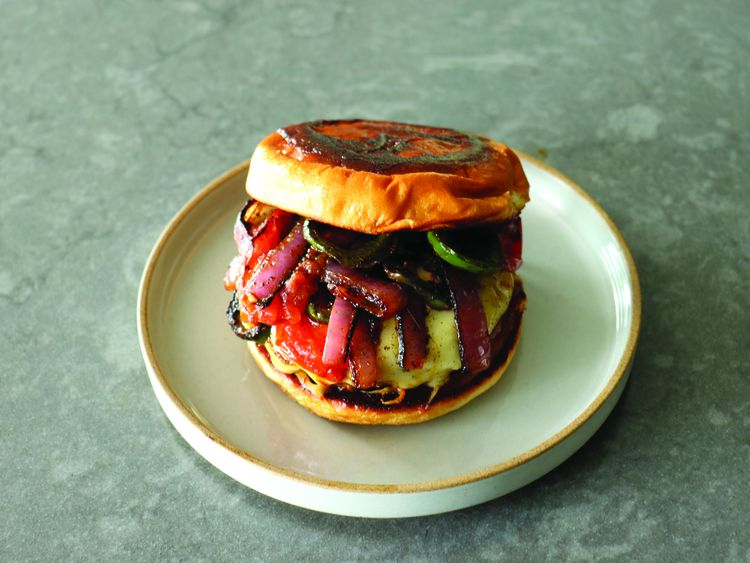

Back to Recipes
Fajita Cheeseburger

Description
Fajita cheeseburger is a delicious fusion of flavors, combining the classic cheeseburger with the vibrant spices of fajitas. It's a fun and tasty twist on two favorites!
Ingredients
- 6 oz ground beef
- salt and perrer to taste
- 1 tablespoon olive oil
- 2 teaspoons unsalted butter
- 1/2 cup diced bell peppers
- 1/2 cup diced onions
- 1 teaspoon fajita seasoning
- 4 slices cheddar cheese
- 4 hamburger buns
- Lettuce, tomato, and condiments of choice
Instructions
- Preheat the grill or stovetop skillet over medium-high heat.
- Season the ground beef with salt and pepper, then form into patties.
- In a skillet, heat olive oil over medium heat. Add diced bell peppers and onions, sauté until softened.
- Add fajita seasoning to the veggies and stir well. Remove from heat.
- Cook the burger patties on the grill or skillet for about 4-5 minutes per side, adding cheese slices during the last minute of cooking.
- Toast the hamburger buns on the grill or in a toaster.
- Assemble the burgers by placing the patty on the bun, topping with sautéed veggies, lettuce, tomato, and any condiments you like.
- Serve hot and enjoy your fajita cheeseburger!